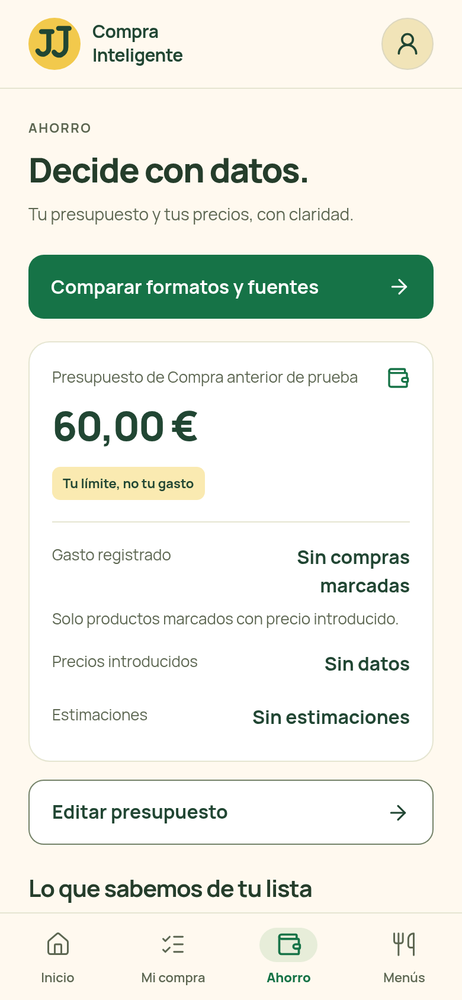
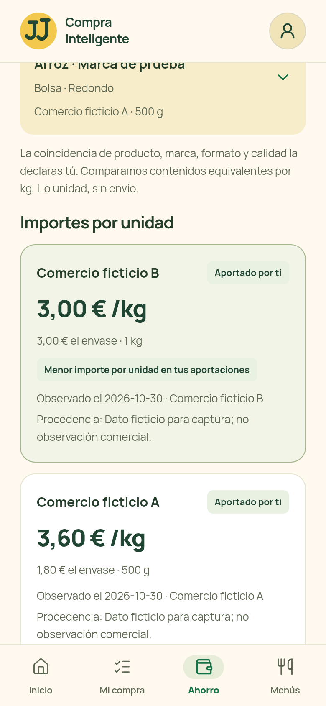
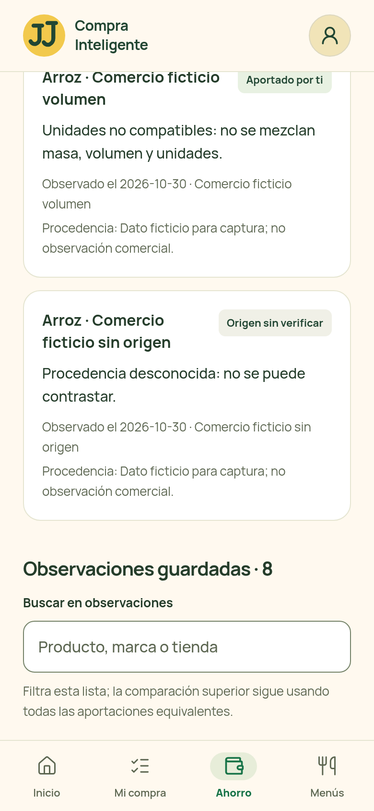
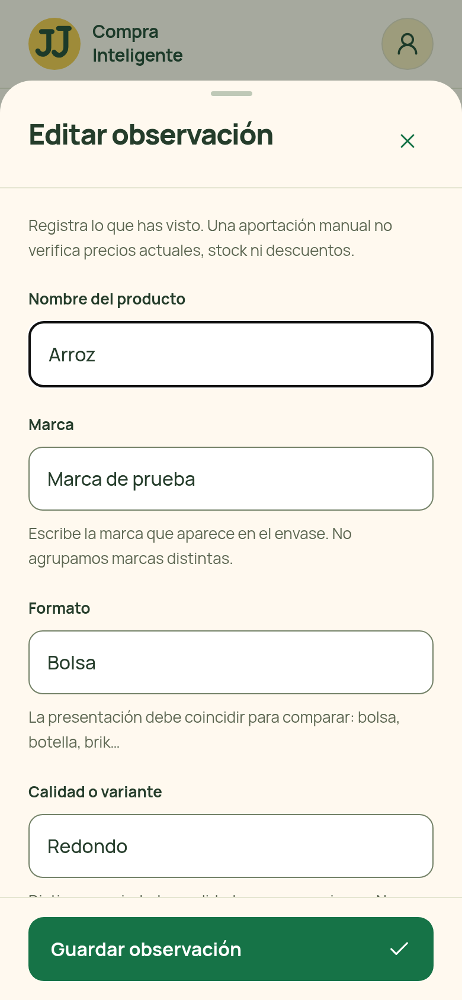
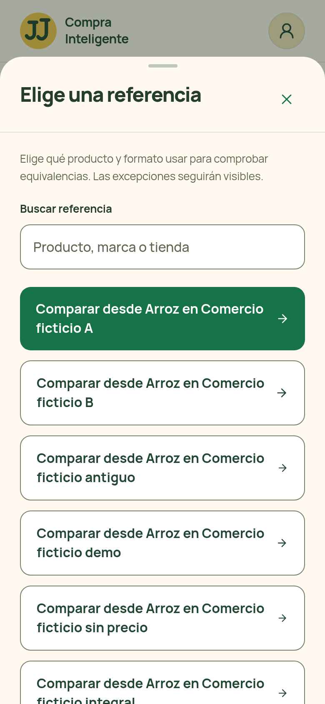
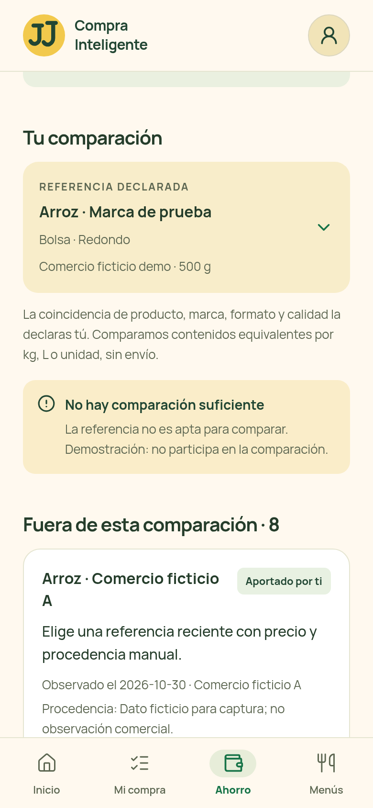
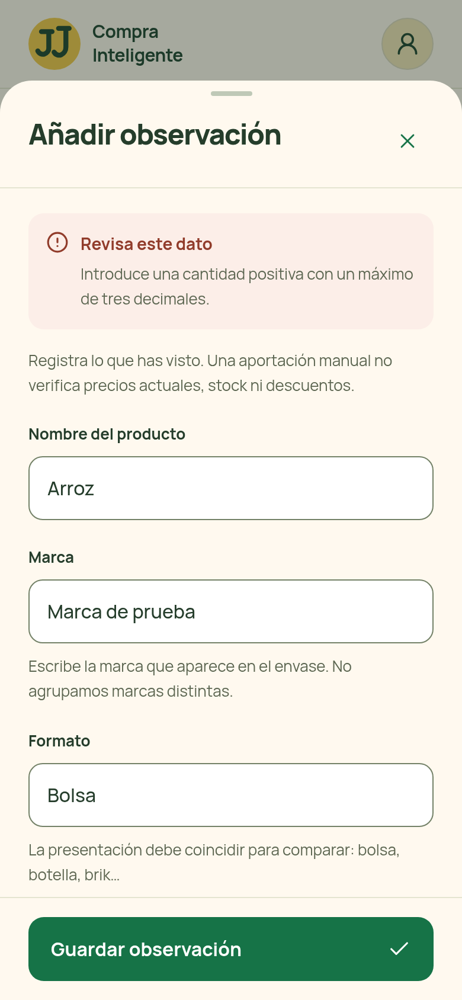
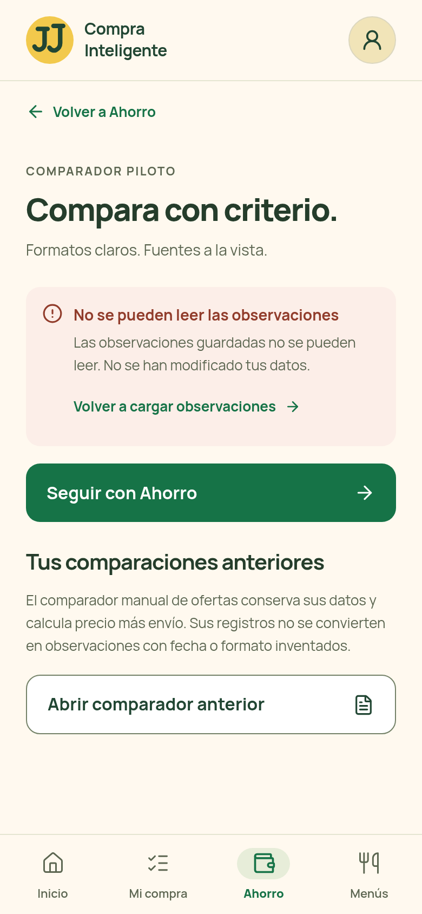
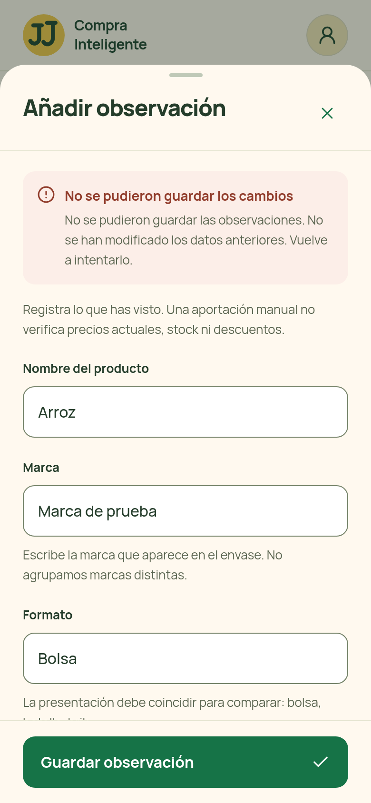
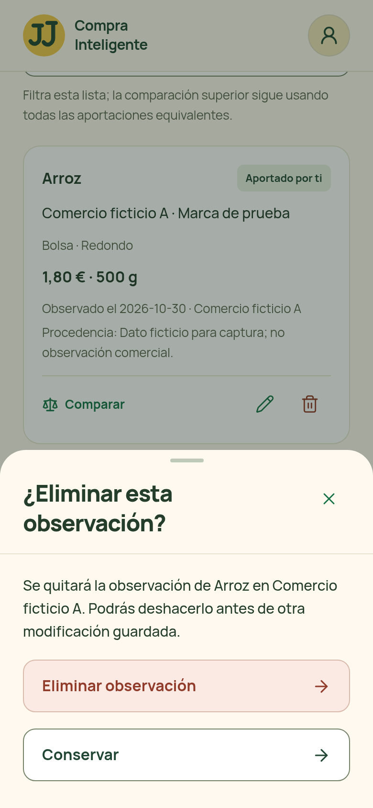

Ahorro · entrada al piloto
390 × 844 CSS px · 780 × 1688 px
Piloto · sin observaciones390 × 844 CSS px · 780 × 1688 px
Importes por unidad · aportaciones ficticias
390 × 844 CSS px · 780 × 1688 px
Excepciones · fecha, origen, calidad y unidad
390 × 844 CSS px · 780 × 1688 px
Nueva observación · sin guardar390 × 844 CSS px · 780 × 1688 px
Editar observación · datos revisables
390 × 844 CSS px · 780 × 1688 px
Elegir referencia declarada
390 × 844 CSS px · 780 × 1688 px
Demostración · excluida de la comparación
390 × 844 CSS px · 780 × 1688 px
Cantidad inválida · datos conservados
390 × 844 CSS px · 780 × 1688 px
Fecha futura · corrección obligatoria390 × 844 CSS px · 780 × 1688 px
Datos ilegibles · sin sobrescritura
390 × 844 CSS px · 780 × 1688 px
Error al guardar · formulario conservado
390 × 844 CSS px · 780 × 1688 px
Eliminar observación · confirmación
390 × 844 CSS px · 780 × 1688 px